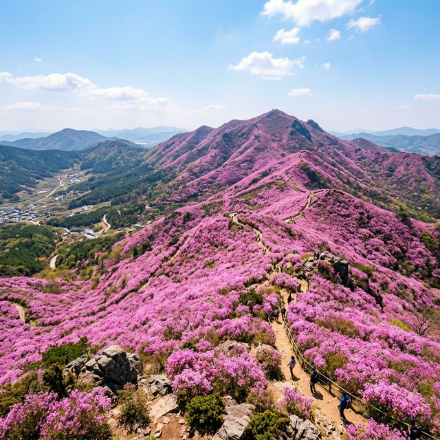
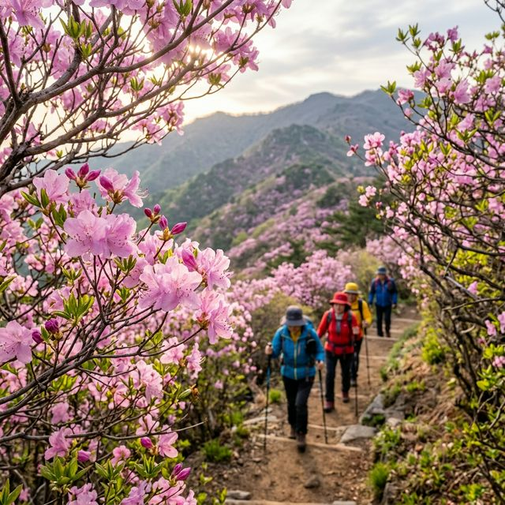
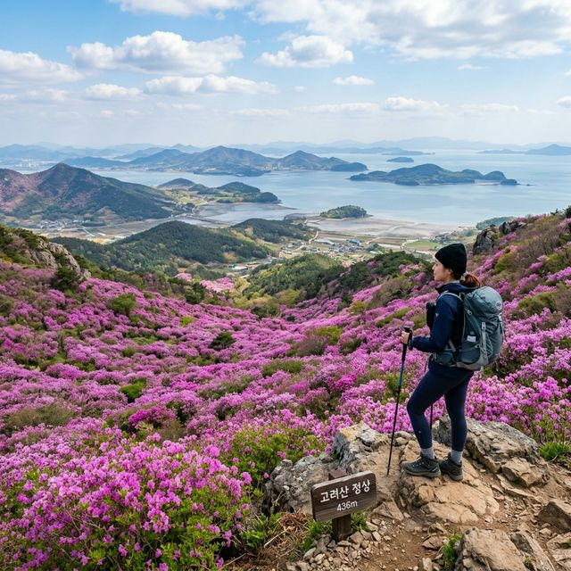

드디어 기다리던 2026 강화 고려산 진달래축제가 오늘(4월 11일) 그 화려한 막을 올렸습니다. 전국에서 가장 늦게 피는 진달래로 알려진 만큼, 서울의 벚꽃이 흩날리는 이 시점에 강화도는 이제 막 분홍빛 파도가 산등성이를 덮기 시작했는데요. 답답한 도심을 벗어나 탁 트인 서해 바다와 끝도 없이 펼쳐진 진달래 군락지를 동시에 조망할 수 있는 고려산은 봄나들이객에게는 절대 놓칠 수 없는 성지와도 같습니다. 오늘은 축제 개막 첫날의 활기찬 현장 분위기와 함께, 헛걸음하지 않고 완벽하게 축제를 즐길 수 있는 실전 정보를 아주 상세히 전해드리겠습니다.

올해 축제는 4월 11일부터 19일까지 9일간 진행됩니다. 강화군은 방문객의 안전과 쾌적한 관람을 위해 '집중 관리 기간'을 설정하고 등산로 정비 및 임시 주차장 확충에 전력을 다하고 있는데요. 특히 이번 축제는 화려한 무대 공연보다는 '현장의 자연 경관'과 '안전한 산행'에 초점을 맞추어 운영됩니다. 산행 가능 시간은 일출 후부터 일몰 전인 오후 4시까지로 제한되며, 정상 부근의 혼잡을 막기 위해 일방통행 구간이 설정될 수 있으니 현장 안내 요원의 지시에 적극 협조하는 것이 중요합니다. 맑은 공기와 함께 분홍빛 융단을 밟으며 봄의 정취를 만끽하기에 더할 나위 없는 시기입니다.
축제 기간 중 가장 주의해야 할 점은 고려산 내부로의 차량 진입이 전면 차단된다는 사실입니다. 내비게이션에 '고려산'을 찍고 오시기보다는 미리 지정된 임의 주차장을 목적지로 설정하고 이동하셔야 합니다. 주말에는 전국에서 몰려드는 인파로 인해 강화도 진입로부터 정체가 시작될 수 있으니, 최소한 오전 8시 30분 이전에는 강화도에 입성하는 스케줄을 짜는 것이 정신 건강에 이롭습니다. 주차에 실패하면 산행 시작 전부터 기운을 다 뺄 수 있으니 아래의 주차 정보를 꼭 확인하세요.
고려산 진달래 군락지(정상 헬기장 인근)까지 가는 길은 총 5가지 코스가 있습니다. 각 코스마다 소요 시간과 난이도, 그리고 보이는 풍경이 확연히 다르기 때문에 본인의 체력과 동반자의 상황을 고려하여 선택하는 지혜가 필요합니다. 가장 많은 분들이 선택하는 경로는 역시 1코스이지만, 조금 더 여유로운 산행을 즐기고 싶다면 우회 코스를 고민해보는 것도 좋은 방법입니다. 50% 이상의 구간이 포장도로인 곳도 있고, 완전한 산길인 곳도 있으니 신발 선택에도 유의하셔야 합니다.
| 코스명 | 주요 경로 | 난이도 | 소요시간(편도) |
|---|---|---|---|
| 1코스 (백련사) | 고인돌 광장 - 백련사 - 정상 | 중하 | 약 1시간 10분 |
| 2코스 (청련사) | 국화리 - 청련사 - 정상 | 중 | 약 1시간 20분 |
| 5코스 (미꾸지) | 미꾸지고개 - 낙조봉 - 정상 | 중상 | 약 2시간 30분 |

2026년 봄은 기온 변화가 유난히 심했던 탓에 개화 시기 예측이 쉽지 않았습니다. 하지만 4월 11일 현재, 정상부 군락지는 약 80% 가량 분홍색으로 물들어 장관을 이루고 있습니다. 강화도 평지에는 이미 꽃이 많이 핀 상태지만, 고도가 높은 고려산 정상부는 기온이 낮아 이제야 절정에 다다르고 있는 것인데요. 기상청 예보에 따르면 다음 주 초(4월 13~14일) 기온이 크게 오르면서 100% 만개할 것으로 보입니다. 이번 주말(11~12일)은 싱싱하게 피어나는 꽃들을 볼 수 있는 최적의 시기이며, 사진 촬영을 목적으로 하신다면 오전 10시 이전의 사광을 이용하시는 것을 추천합니다.
등산을 하는 가장 큰 이유 중 하나는 역시 사진이겠죠? 고려산 정상의 진달래 군락지는 나무 데크가 잘 조성되어 있어 산을 오르는 도중에도 멋진 배경을 만날 수 있습니다. 첫 번째 포인트는 헬기장 인근 전망대입니다. 이곳에서는 굽이굽이 이어지는 능선을 따라 펼쳐진 핑크빛 물결을 한눈에 담을 수 있습니다. 두 번째는 정상 등산로 입구의 '진달래 터널' 구간입니다. 키를 훌쩍 넘는 진달래 나무들이 아치를 형성하고 있어 마치 동화 속 세계로 들어가는 듯한 분위기를 자아냅니다. 마지막은 강화도 앞바다가 멀리 내다보이는 능선길로, 바다의 푸른빛과 진달래의 분홍빛이 대비를 이루는 환상적인 구도를 선물합니다.

산행으로 소모된 칼로리를 보충할 시간입니다. 강화도는 예부터 인삼과 순무, 그리고 장어가 유명하죠. 고려산 인근에는 등산 후 가볍게 즐길 수 있는 국수 전문점부터 정갈한 한정식집까지 다양한 맛집이 포진해 있습니다. 특히 이 시기에만 맛볼 수 있는 밴댕이 회무침은 새콤달콤한 양념이 입맛을 돋우어 줍니다. 또한 하산 길에 백련사나 청련사 인근에서 파는 도토리묵과 파전에 막걸리 한 잔은 등산의 피로를 말끔히 씻어주는 최고의 처방전이 될 것입니다. 강화 특산물인 노란 고구마와 순무 김치를 한 봉지 사들고 귀가하는 것도 잊지 마세요.
고려산은 해발 436m로 그리 높은 산은 아니지만, 정상 부근의 경사가 급한 구간이 꽤 있습니다. 또한 산 정상부는 평지보다 바람이 강하고 기온이 낮기 때문에 가벼운 바람막이 점퍼는 필수입니다. 준비물로는 충분한 생수, 간편한 간식(초콜릿, 견과류), 그리고 강한 햇빛을 차단할 모자와 선글라스를 챙기세요. 특히 무릎 관찰을 위해 스틱을 지참하시면 하산 시 훨씬 편안하게 내려오실 수 있습니다. 무엇보다 산불 예방을 위해 인화 물질 소지는 절대 금물이며, 가져온 쓰레기는 반드시 다시 가져가는 성숙한 등산 문화를 보여주시기 바랍니다.
강화 고려산 진달래축제는 단순히 꽃을 보는 것을 넘어, 추운 겨울을 견뎌내고 일제히 꽃을 피운 생명력을 온몸으로 느끼는 경험입니다. 2026년 4월의 두 번째 주말, 사랑하는 가족, 연인, 혹은 친구와 함께 이 아름다운 분홍빛 융단을 밟아보시는 건 어떨까요? 비록 이른 새벽부터 서둘러야 하고 주차 전쟁이 기다리고 있을지도 모르지만, 정상에서 마주하는 그 압도적인 풍경은 모든 고생을 잊게 하기에 충분할 것입니다. 이번 축제가 끝나면 다시 1년을 기다려야 하는 만큼, 이 짧고 찬란한 봄날을 마음껏 누리시길 바랍니다.